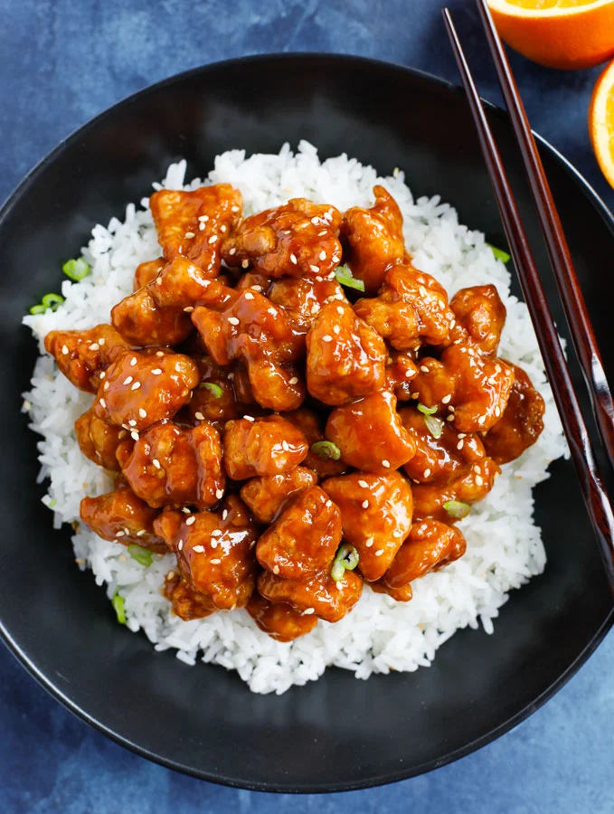

Orange Chicken

Description
This recipe will teach you how to make some homemade Asian Orange Chicken!
Ingredients
Chicken:
- 4 Boneless Skinless Chicken Breasts
- 3 Eggs
- 1/3 cup Cornstarch
- 1/3 cup Flour
- Salt
- Oil
Sauce:
- 1 cup Orange Juice
- 1/2 cup Sugar
- 2 Tablespoons Rice Vinegar
- 2 Tablespoons Soy Sauce
- 1/4 teaspoon Ginger
- 1/2 teaspoon Garlic Powder
- 1/2 teaspoon Red Chili Flakes
- Orange Zest
- 1 Tablespoon Cornstarch
Garnish:
Steps
- To make orange sauce:
- In a medium pot, add orange juice, sugar, vinegar, soy sauce, ginger, garlic, and red chili flakes. Heat for 3 minutes
- In a small bowl, whisk 1 Tablespoon of cornstarch with 2 Tablespoons of water to form a paste. Add to orange sauce and whisk together. Continue to cook for 5 minutes, until the mixture begins to thicken. Once the sauce is thickened, remove from heat and add orange zest.
- To make chicken:
- Place flour and cornstarch in a shallow dish or pie plate. Add a generous pinch of salt. Stir.
- Whisk eggs in shallow dish.
- Dip chicken pieces in egg mixture and then flour mixture. Place on plate.
- Heat 2 -3 inches of oil in a heavy-bottomed pot over medium-high heat. Using a thermometer, watch for it to reach 350 degrees.
- Working in batches, cook several chicken pieces at a time. Cook for 2 - 3 minutes, turning often until golden brown. Place chicken on a paper-towel-lined plate. Repeat.
- Toss chicken with orange sauce. You may reserve some of the sauce to place on rice. Serve it with a sprinkling of green onion and orange zest, if so desired.